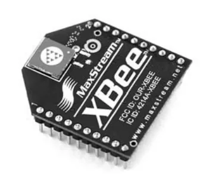
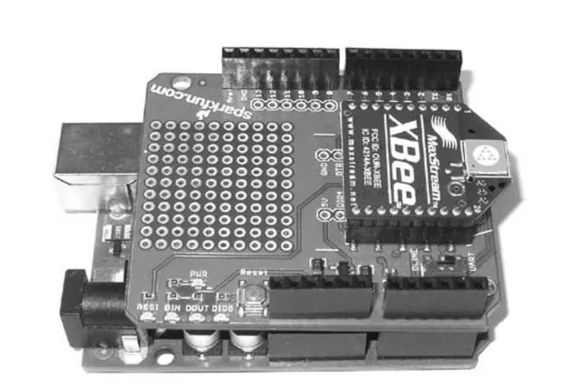
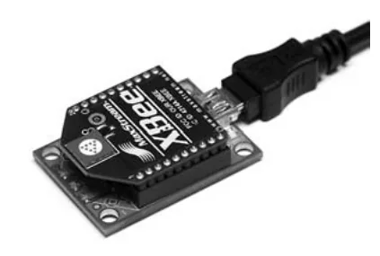

Faster Speed
When you need a wireless data link with greater range and a faster data speed than what the basic wireless modules used earlier can provide, XBee data modules may be the right choice. These modules transmit and receive serial data directly to one or more XBee modules and to and from a computer. Several models of XBee modules are available, but we’ll use the Series 1 line of XBee transceivers, shown in Figure 14-6.

Connecting the transceiver to an Arduino is simple with an XBee shield, shown in Figure 14-7.

To communicate with a computer, you can use the XBee Explorer board, such as the board shown in Figure 14-8 (SparkFun part WRL-08687).

XBees don’t require their own library; they operate as a simple serial data bridge that sends and receives data via the Arduino’s serial line.